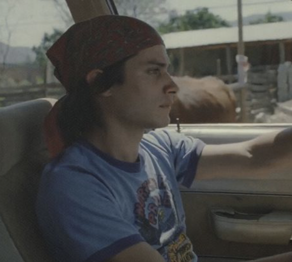
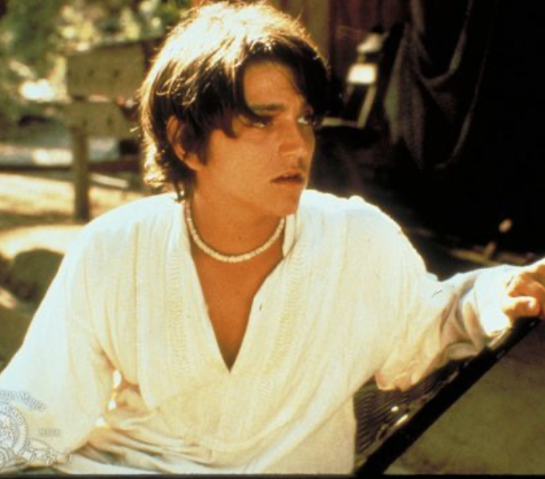

YTMT
PERSONAJES
PERSONAJES PRINCIPALES

Julio
Joven mexicano de clase media. Se caracterizá por ser impusilvo, curioso, y en algunos momentos inseguro.
Luisa
Mujer española, casada con Jano el primo de Tenoch. Es sinsble, independiente y busca disfrutar la vida y con total libertad.

Tenoch
Joven mexicano de clase alta. Es impusilvo, orgulloso y en algunas ocaciones algo inmaduro.
PERSONAJES SECUNDARIOS
Cecilia
La novia de Julio en el principio de la película. La relación se da casi por finalizada cuando ella emprende viaje con Ana.
Saba
Amigo de Julio y Tenoch. Es caracterizado por gustarle la fiesta, la diversión y vivir despreocupado.

Ana
La novia de Tenoch en el principio de la película. La relación se da casi por finalizada cuando ella emprende viaje con Cecilia.